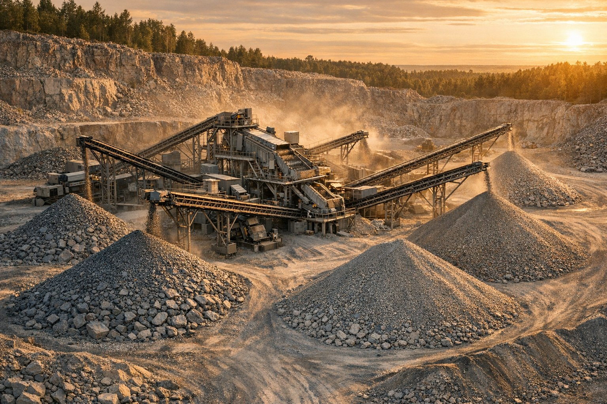

01 / ПРЕИМУЩЕСТВО
Подбор под задачу
Состав линии зависит от сырья, нужных фракций и условий площадки.
Направление 01 · Дробление и сортировка
Подберём дробильно сортировочный комплекс под ваше сырьё, требуемые фракции и площадку. Поставка, шеф монтаж, пуско наладка и сервис в одной компании.

Работаем с 2011 года. Инженеры компании взаимодействуют с заводами напрямую и помогают пройти путь от выбора оборудования до его запуска.
Состав линии зависит от сырья, нужных фракций и условий площадки.
Работаем с производителями LIMING, ZENITH / SBM, DINGSHENG и VANGUARD.
Изготавливаем конвейеры, шнеки, силосы и вибропитатели по задаче.
Организуем шеф монтаж и пуско наладку оборудования.
От исходного сырья до готовых фракций. Одна команда отвечает за весь путь.
Состав решения и условия работ согласуем до оформления заказа.
Уточняем сырьё, плановую производительность, фракции и ограничения площадки.
Подбираем оборудование и состав линии, готовим коммерческое предложение.
Согласуем сроки по договору, организуем монтаж и дальнейший сервис.
В проектах компании есть поставка ДСК 200 т/ч после визита на завод SBM / ZENITH в 2019 году, запуск комплекса 150 т/ч в 2014 году и мобильного ДСК SAMYOUNG 250 т/ч в Усть Куте в 2012 году. Полный список проектов: sdors.ru/proekty.
В маркетинг ките представлены готовые комплексы производительностью 100–450 т/ч. Конкретная конфигурация подбирается под исходные условия.
Да. В линейке представлены мобильные решения, включая Dingsheng TAS380, WLF и WHPS.
Щековые, конусные, роторные дробилки и дробилки VSI. Подбор зависит от сырья и требуемого продукта.
Да. Компания указывает собственное производство ленточных конвейеров любой сложности, а также вибропитателей до 1600 т/ч.
Шеф монтаж и пуско наладка входят в перечень услуг компании. Состав работ согласуется для конкретного проекта.
Сервисные центры компании находятся в Иркутске, Владивостоке и Москве.
Расскажите, какое оборудование или комплектующие нужны. Подготовим предложение после уточнения исходных данных.
Телефон
+7 (3952) 43 67 23
+7 (924) 605 50 05
Электронная почта
info@sdors.ru
Адрес
Иркутск, ул. Рабочего Штаба, 1/7
Пн–пт, 9:30–18:00